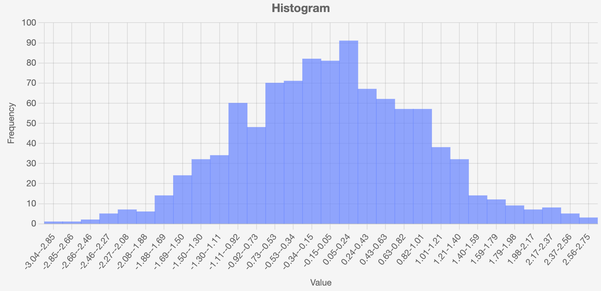

Histogram
The HistogramBarChart class provides histogram chart functionality based on Chart.js Bar Charts with histogram-specific configuration. It uses NumPy's histogram function for data binning and analysis. Learn more about histograms on Wikipedia.

Basic Usage
from H5Gizmos import serve
import numpy as np
from chart_gizmo.histogrambar import HistogramBarChart
# Generate sample data - a mix of two normal distributions
np.random.seed(42) # For reproducibility
data1 = np.random.normal(loc=0, scale=1, size=1000) # Mean 0, Std dev 1
data2 = np.random.normal(loc=3, scale=0.5, size=500) # Mean 3, Std dev 0.5
combined_data = np.concatenate([data1, data2])
# Create the histogram with 40 bins
histogram = HistogramBarChart(
data=combined_data,
y_label="Probability Density"
)
# Display the histogram
serve(histogram.show())
Class: HistogramBarChart
Location: chart_gizmo/histogrambar.py
Description
A class to represent a histogram bar chart. Inherits from AbstractChart.
Creates a histogram bar chart from numerical data using numpy's histogram functionality. Inherits from BarChart.
Constructor Parameters
width(int): Chart width in pixels (default: 600)height(int): Chart height in pixels (default: 400)title(str): Chart titlebins(int): Number of bins for the histogramanimate(bool): Enable or disable animations. Default isFalse(no animation). Controlled by the symbolic constantANIMATION_DEFAULT.
Key Methods
create_histogram(data): Create a histogram from data.from_file(filename, **kwargs): Create a histogram from a file.add_label(label): Add a label for each data point to the chart. The label should match the dataset value size.set_data(data): Set the data for the histogram. Data should be a list or NumPy array of numerical values.on_click_call(callback, action='click', selection='nearest'): Set a callback function for click events on the chart. See OnClick Event Example.saveImage(filepath): Asynchronous method to save the chart as a PNG image file. Must be awaited when called. See Chart Image Export Example.filepath: Path where the image file will be saved
Example
from chart_gizmo.histogrambar import HistogramBarChart
from H5Gizmos import serve
chart = HistogramBarChart(title="Example Histogram", animate=False)
chart.set_data([1, 2, 2, 3, 3, 3, 4, 4, 4, 4])
serve(chart.show())
Command-line Script
HistogramGizmoScript(): Command-line script to create histogram from file.
See the Histogram CLI documentation for detailed usage instructions on the command-line tool.